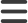

<div class="page">

    <div class="top-bar">
        
        
    </div>    

    <div class="content">
        <router-outlet></router-outlet>
    </div>

</div>

<nav-bar 
[isNavbarOpen]="isNavbarOpen" 
(buttonLinkClick)="handleButtonLinkClick($event)">
</nav-bar>
